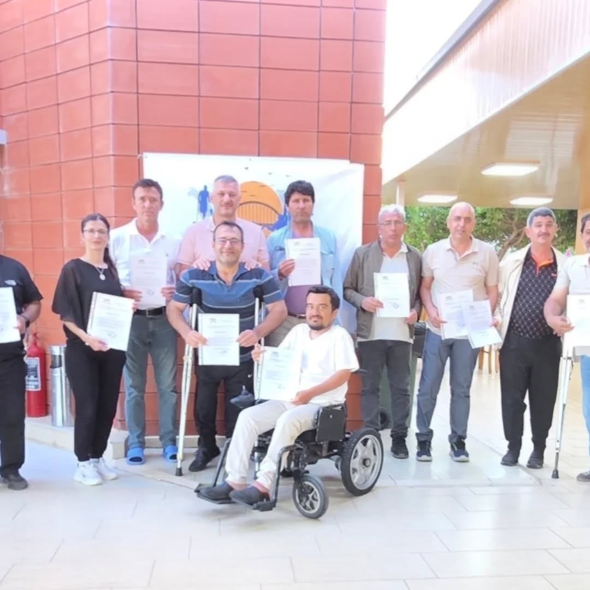

17 Haziran 2026
Eğitim
Eğitim Kampımızda Değerli Üyelerimize Teşekkür Belgeleri Takdim Edildi
Gönül Köprüsü Engelli Memur ve İşçi Derneği tarafından EÜAŞ Mersin Taşucu Denizkent Eğitim Tesislerinde gerçekleştirilen Eğitim ve Değerlendirme Kampı...
Devamını Oku